第 4 章
スケッチ
この章では、スケッチの描き方を説明します。平面や面の上に図形を描き、拘束と寸法で形を決め、編集・投影・コピーで形を整えるところまでを順に操作します。読み終えると、押し出しや回転に使える、形の決まった（完全定義の）スケッチを自分で作れるようになります。
4.1 スケッチの基本
スケッチは、部品の元になる 2D の図形です。平面（または平らな面）の上に、線・円・円弧などの曲線を描き、その閉じた領域（プロファイル）を押し出しや回転に使います。スケッチを編集している間は、リボンに緑色の［スケッチ］タブが出て、ビューが平面に正対します。

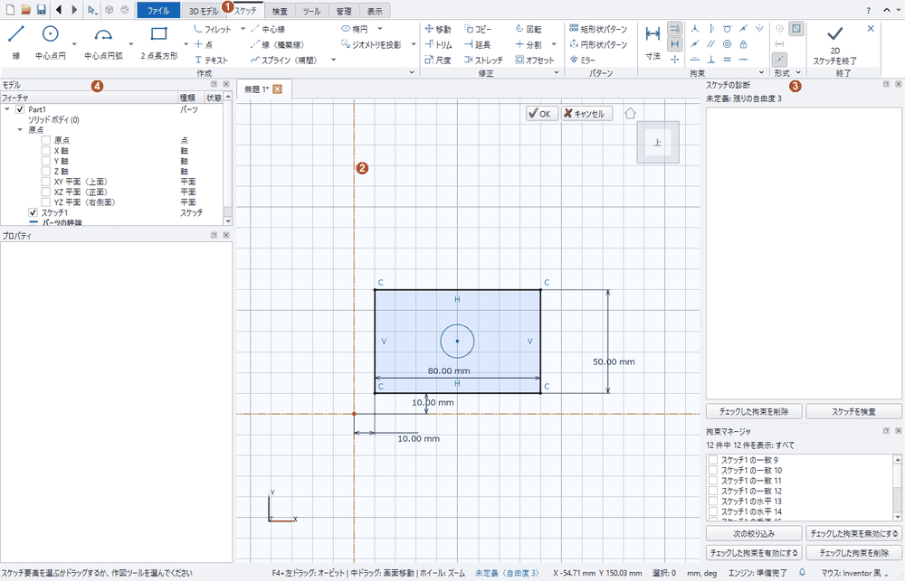
線の色と太さで、形がどこまで決まっているかが分かります。
| 表示 | 意味 |
|---|---|
| 青い細い線 | 寸法や拘束がまだ足りず、動かせる（未定義） |
| 黒い太い線 | 形が全部決まっている（完全定義） |
| 赤い線と × の印 | 拘束が多すぎる（過剰定義）、または競合している |
| 青緑の線 | モデルから投影した線（ジオメトリの投影）。動かせません |
| 茶色の破線 | 投影元をなくした投影の線（宙に浮いた線） |
| 橙の大きな点 | 他の線につながっていない端点（開いた端点） |
| 淡い青の網掛け | 閉じた領域（押し出しに使えるプロファイル） |
ステータスバーにも、未定義（自由度 3）・完全定義のように状態が出ます。自由度は、あと何か所を決めれば形が決まるかを表します。
4.2 スケッチを始める・終える
平面を選んで始める
スケッチは、原点の平面・作業平面・UCS・パーツの平らな面のどれかの上に置きます。平面を選ぶとすぐにスケッチのモードに入ります。
リボンの［3D モデル］タブ → ［スケッチ］パネル → ［スケッチ］をクリックします（S でも始められます）。プロパティ パネルに［スケッチ］のフォームが出ます。
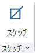
図 4-2 ［3D モデル］タブの［スケッチ］パネル。 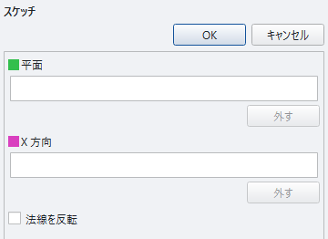
図 4-3 スケッチのフォーム。［平面］の欄が、置く平面の選択を待っています。［X 方向］と［法線を反転］は、必要なときだけ使います。 ビューに半透明の原点の平面が出ます。ブラウザの［原点］の［XY 平面（上面）］などをクリックするか、ビューの平面をクリックします。
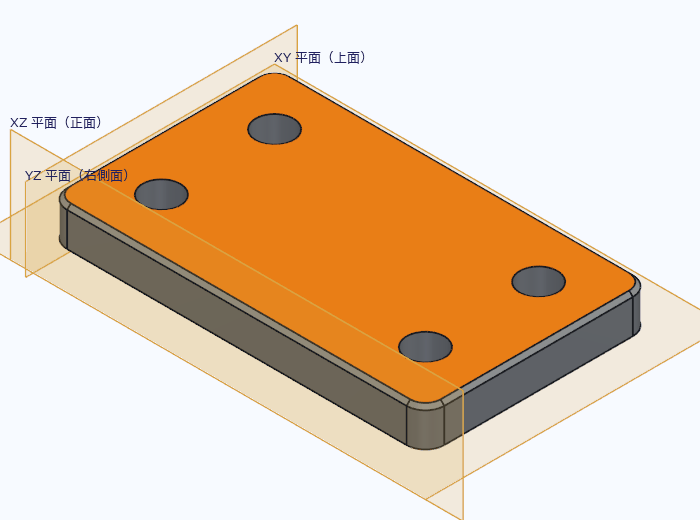
図 4-4 平面を選ぶ途中。非表示の原点の平面も、選ぶ間だけ出ます。パーツの面にカーソルを重ねると、その面が橙で強調されます。 スケッチのモードに入ります。ビューが平面に正対し（平行投影）、グリッドが出ます。ほかのボディは半透明になります。


先に平面を選んでから［スケッチ］を押しても、同じようにすぐ始まります。
右クリックからも始められます。ブラウザの［原点］の平面（［XY 平面（上面）］・［XZ 平面（正面）］・［YZ 平面（右側面）］）や作業平面の行を右クリックすると、メニューの先頭に［新しいスケッチ］があります。選ぶと、その平面にすぐスケッチが始まります。ビューの作業平面・平らな面を右クリックしたメニューにもあります（平らな面に始める）。

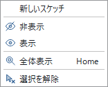
X 方向と法線の反転
スケッチの横軸（X 軸）の向きや、見る側を、平面を選ぶ前にフォームで決められます。平面を選ぶとすぐ始まるので、先にこの 2 つを決めます。
［X 方向］: 欄をクリックして、ビューの辺か軸を選びます。選んだ線の向きが、スケッチの X 軸になります。
［法線を反転］: チェックを入れると、平面の裏側から見る向きになります。
平面を選ばずに［OK］（Enter）を押すと、XY 平面にスケッチが始まります。
平らな面に始める
パーツの平らな面の上にもスケッチを置けます。［スケッチ］を押して、ビューで面をクリックします（面にカーソルを重ねると、選べる面が橙で強調されます）。面を右クリックして始める方法もあります。
ビューで、スケッチを置く平らな面を右クリックします。何も選んでいなくてかまいません。右クリックした面が選ばれ（青くなり）、その面のメニューが出ます。
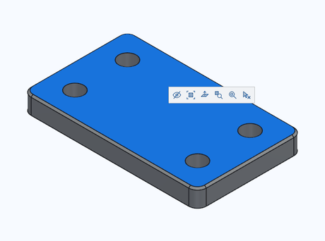
図 4-6 上面を右クリックしたところ。面が青く選ばれています。 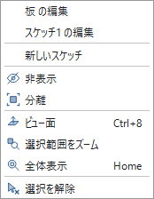
図 4-7 その面のメニュー。［新しいスケッチ］は、面を作ったフィーチャとスケッチの編集の次にあります。 メニューの［新しいスケッチ］を選びます。その面にスケッチが始まります。


ほかの要素を選んでいるときに別の面を右クリックすると、選択はその面だけに替わります。選んでいる面を右クリックしたときは、選択はそのままです。作業平面も、ビューで右クリックするだけで同じように始められます。
面に置いたスケッチでは、面の外周が自動で投影されます（ジオメトリの投影）。自動の投影は、［オプション］ダイアログの［スケッチ］ページで切れます。置き場所は、あとから平面を付け替えられます。
スケッチを終了する
リボンの［スケッチ］タブ →［終了］パネル →［2D スケッチを終了］をクリックします。ビューの右上の［OK］でも終わります。
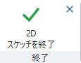
図 4-8 ［スケッチ］タブの［終了］パネル。右の × は［スケッチの変更を破棄］です。 パーツのモードに戻り、ビューのカメラも入る前の向きに戻ります。ブラウザに［スケッチ1］ができ、後ろのフィーチャが再計算されます。


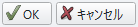
ビューの空白を右クリックして、メニューの［2D スケッチを終了］を選んでも終えられます。変更を捨てるには、［キャンセル］（またはリボンの［スケッチの変更を破棄］、右クリックのメニュー）を押します。新しく作ったスケッチは、スケッチごと消えます。
スケッチを始めてから終えるまでの変更は、元に戻す（Ctrl+Z）で 1 つずつ戻せます。ただし、スケッチを始める前の状態までは戻りません。スケッチを終えると、全体が 1 つの変更として履歴に入ります。
描いたスケッチを編集し直す
ブラウザの［スケッチ1］などの行をダブルクリックします。
ブラウザのスケッチの行を右クリックして、［スケッチを編集］を選びます。
ビューのパーツの面やエッジを右クリックして、［スケッチを編集］を選ぶと、その面を作ったフィーチャのスケッチが開きます。
編集の間は、ほかのフィーチャの編集や削除はできません（［このフィーチャを変えるにはスケッチを終了してください］と出ます）。押し出しなどに使われたスケッチは、既定で非表示です。ブラウザの行の左のチェックで、表示を切り替えられます。
4.3 作図ツール
作図の基本操作
作図のツールは、リボンの［スケッチ］タブ →［作成］パネルにあります。▼ の付いたボタンは、押すと同じ仲間のツールの一覧が出ます。最後に使ったツールがボタンの表に残ります。

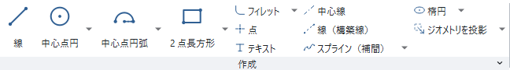

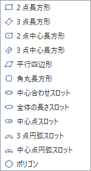
作成パネルでツールを選びます。ステータスバーに、次の操作が案内されます。
ビューをクリックして、点を順に決めます。既存の点・線の近くをクリックすると、端点・中心・中点・交点などに吸い付きます（自動で付く拘束）。
図形ができたら、続けて次の図形を描けます。Esc でツールを終え、選択に戻ります。
描いた要素どうしは、端点が一致の拘束でつながります。ツールによっては、水平・垂直・正接などの拘束も、形に合わせて自動で付きます。
| ツール | キー |
|---|---|
| ［線］ | L |
| ［中心点円］ | C |
| ［テキスト］ | T |
| ［寸法］ | D |
| ［ジオメトリを投影］ | P |
線・連続線
リボンの［スケッチ］タブ → ［作成］パネル → ［線］をクリックします。
始点をクリックし、続けて次の点をクリックします。クリックのたびに線が 1 本できて、その終点から次の線が伸びます（連続線）。
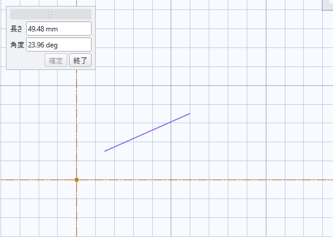
図 4-12 始点をクリックしたあとの線。［長さ］と［角度］の入力ウィンドウ（HUD）が出ます（写真では、線と一緒に写るよう、ビューの左上から動かしています）。［確定］・［終了］のボタンがあります。 連続線を終えるには、ダブルクリックか Enter を押します。最初の点をクリックして閉じたときも、そこで連続線が終わります。Esc でツールを終えます。

水平・垂直に近い向きで引くと、水平・垂直の拘束が付きます（自動で付く拘束）。
回転の軸にする線は、［中心線］で描きます。破線で描く補助の線は、［線（構築線）］です（構築線と中心線）。
円・円弧
円と円弧は、それぞれ 3 種類のツールがあります。
| ツール | 操作 |
|---|---|
| ［中心点円］ | 中心をクリックし、円周上の点をクリックします。 |
| ［3 点円］ | 円周上の 3 点をクリックします。 |
| ［接線円］ | 3 本の線を順にクリックします。3 本に接する円ができます。最後のクリックに近い側（内接円か傍接円）が選ばれます。 |
| ［中心点円弧］ | 中心・始点・終点の順にクリックします。カーソルを回した向きに円弧ができます。 |
| ［3 点円弧］ | 始点・終点・円弧の上の点の順にクリックします。 |
| ［接線円弧］ | 線か円弧の端点をクリックし、そこから接して伸びる円弧の終点をクリックします。 |

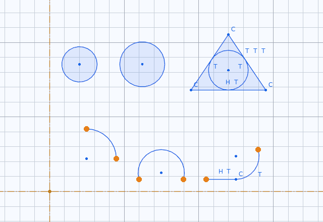
T は正接、C は一致の拘束です。長方形・スロット・ポリゴン
長方形・スロット・ポリゴンは、リボンの［長方形］▼ の一覧にまとまっています。
| ツール | 操作 |
|---|---|
| ［2 点長方形］ | 対角の 2 点をクリックします。 |
| ［3 点長方形］ | 角、1 辺の端点（向きと長さ）、隣の辺の長さの点の順にクリックします。傾いた長方形が描けます。 |
| ［2 点中心長方形］ | 中心と角をクリックします。 |
| ［3 点中心長方形］ | 中心、1 辺の中点（向きと長さの半分）、隣の辺の長さの半分の点の順にクリックします。 |
| ［平行四辺形］ | 3 つの角をクリックします。 |
| ［角丸長方形］ | 対角の 2 点をクリックします。角が正接の円弧で丸まります（4 つの角は等しい半径）。 |
| ツール | 操作 |
|---|---|
| ［中心合わせスロット］ | 両端の円弧の中心 2 点をクリックし、幅の点をクリックします。 |
| ［全体の長さスロット］ | 全体の両端の点をクリックし、幅の点をクリックします。 |
| ［中心点スロット］ | スロットの中心、一方の円弧の中心、幅の点の順にクリックします。 |
| ［3 点円弧スロット］ | 中心線の円弧の始点・終点・円弧の上の点、幅の点の順にクリックします。 |
| ［中心点円弧スロット］ | 中心線の円弧の中心・始点・終点、幅の点の順にクリックします。 |
| ［ポリゴン］ | 中心をクリックし、頂点（内接）か辺の中点（外接）をクリックします。 |

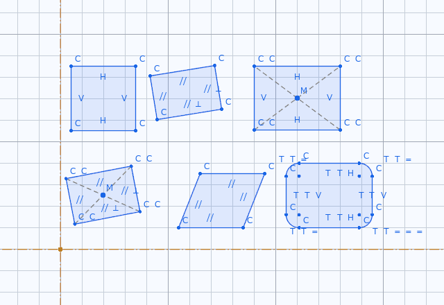

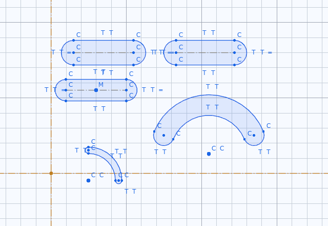
ポリゴンは、HUD の［辺の数］（3〜120）と［種類］（［内接］・［外接］）で形を変えられます。

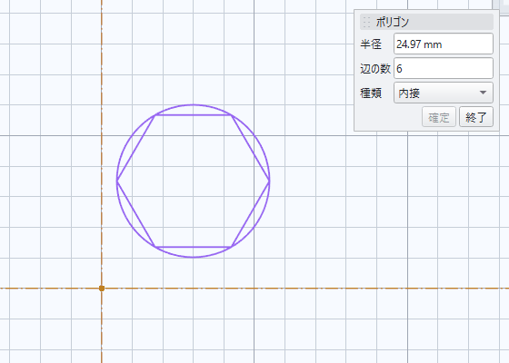
スプライン・楕円・楕円弧
| ツール | 操作 |
|---|---|
| ［スプライン（補間）］ | 通る点を順にクリックします。Enter かダブルクリックで終わります。HUD の［閉じる］にチェックを入れると、閉じたスプラインになります。 |
| ［スプライン（制御頂点）］ | 制御頂点を順にクリックします。曲線は両端の点だけを通り、途中の点は曲線を引き寄せます。 |
| ［楕円］ | 中心、長軸の端点、短軸の半径を決める点の順にクリックします。長軸と短軸の補助線も一緒にできます。 |
| ［楕円弧］ | 楕円と同じ 3 点のあとに、円弧の始点と終点をクリックします（反時計回り）。 |

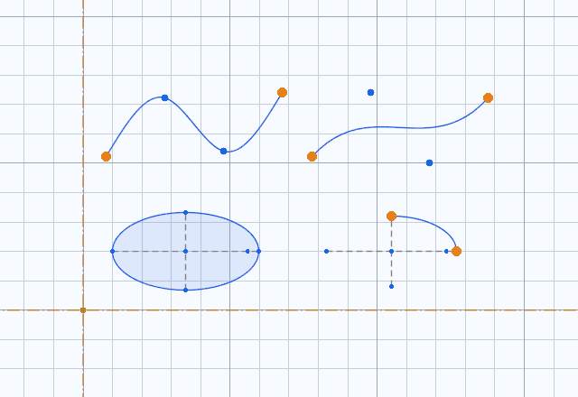
通る点・制御頂点は点の要素になります。ドラッグするか寸法で位置を決めると、曲線が付いてきます。楕円の長軸・短軸の補助線は楕円に結ばれ、補助線の寸法を入れると楕円の大きさが決まります。
点・文字
［点］は、クリックした位置にスケッチ点を置きます。穴の位置など、フィーチャの位置決めに使います。
［テキスト］は、位置をクリックしてから、HUD の［テキスト］・［高さ］・［フォント］を決めて Enter を押します。

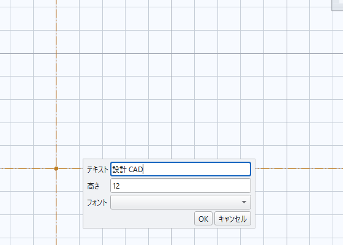

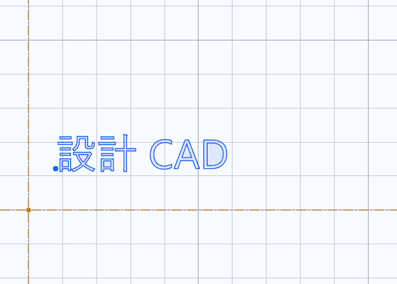
フィレット・面取り
線と線の角を、スケッチの上で丸めたり切り落としたりします。［フィレット］▼ の中の［フィレット］と［面取り］です。
リボンの［スケッチ］タブ → ［作成］パネル → ［フィレット］の▼ → ［フィレット］をクリックし、入力ウィンドウの［半径］を決めます（既定は 5 mm）。ここでは、ビューで
8と打って Enter を押します。打った半径は、次にクリックする角からすぐ使われます（Inventor の［2D フィレット］の小さなダイアログと同じで、ここには［確定］のボタンはありません）。フィレットを終えるには、入力ウィンドウの［終了］を押します（Esc でも終わります）。角を作る 2 本の線を順にクリックします（2 本の線の共有する端点のクリックでも同じです）。角が正接の円弧で丸まり、半径の寸法が付きます。
続けて、ほかの角にも同じようにフィレットを作ります。入力ウィンドウの［等しい］にチェックを入れると、そのあとに作るフィレットは、半径の寸法を持たず、最初のフィレットと「半径が等しい」拘束でつながります（Inventor の 2D フィレットの
=ボタンと同じです）。あとで最初のフィレットの半径を変えると、つながったフィレットがそろって変わります。チェックは、マウスで押すか、Tab で移って Space で入れます。［等しい］にカーソルを合わせると、この説明が出ます。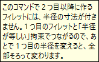
図 4-20 ［等しい］にカーソルを合わせたときの説明（ツールチップ）。 面取りはリボンの［スケッチ］タブ → ［作成］パネル → ［フィレット］の▼ → ［面取り］を選び、HUD で［種類］（［等距離］・［不等距離］・［距離と角度］）と［距離］を決めて、2 本の線をクリックします。［寸法を作成］にチェックを入れると、寸法も付きます。


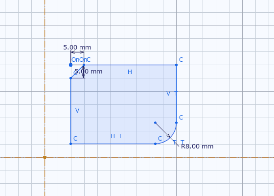
4.4 数値を入力する
作図中は、ビューの左上に入力ウィンドウ（HUD）が出ます。マウスで位置を決める代わりに、数値を打って形を決められます。打った値は寸法として残ります。

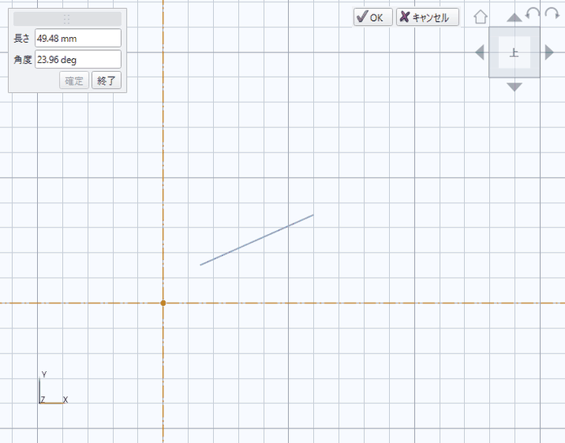
この入力ウィンドウは、カーソルに付いて動きません。マウスを動かしても止まっているので、欄やチェックをマウスで押せます。ボタンの意味は、ツールの種類で次のように分かれます。欄やチェックにカーソルを合わせると、意味が分かりにくいもの（［等しい］・［種類］・［寸法を作成］など）には説明が出ます。
図形に重なって邪魔なときは、上の帯（点が並んだ見出しの行）をドラッグして、ビューの中の好きな場所へ動かします。置いた場所は覚えていて、次のツールでもそこに出ます。ビューの外には出ません。ビューの大きさを変えたときも、中に収まります。
| ツール | ボタン | 押したときの動き |
|---|---|---|
| 線・円・円弧・長方形・スロット・ポリゴン・楕円・スプライン・オフセットなどの作図 | ［確定］・［終了］ | ［確定］は、欄に打った値でいま形を作ります（Enter と同じ。値を打つまでは押せません。スプラインは点が足りないあいだ押せません）。［終了］は、コマンドを終えて選択に戻ります。描きかけの形は捨てられ、作った形は残ります。値を打ってから［確定］を押しに行く間にマウスがビューの上を動いても、形は値を打ったときのカーソルの位置で決まります（打っていない欄の値と向きも同じです）。オフセットは、曲線を選んで距離を打つと［確定］が押せます |
| フィレット・面取り・等分割 | ［終了］だけ | 打った半径・距離・個数は、次にクリックする角や線にすぐ使われます（作るものが無いので［確定］は出ません）。［終了］でコマンドを終えます。作った形は残ります |
| 回転・尺度・パターン・パターンの編集 | ［OK］・［キャンセル］ | ［OK］は、欄の値で操作を適用します（回転・尺度・編集は、値を打つまで押せません。灰色のときは、ボタンにカーソルを合わせると理由が出ます）。［キャンセル］は、プレビューを捨て、何も変えずにコマンドを終えます |
| ［テキスト］ | ［OK］・［キャンセル］ | ［OK］は、打った文字をスケッチに置きます。［キャンセル］は、いま打っている文字をやめるだけで、ツールは続きます（次の位置をクリックして、続けて文字を置けます）。ほかのツールのキャンセルとは違い、コマンドは終わりません |
| 移動・コピー・ストレッチ | ［キャンセル］だけ | 打つ値が無く、移動先のクリックで適用されます。［キャンセル］は、プレビューを捨ててコマンドを終えます |
ビューの Esc は、どのツールでも、コマンドを終えて選択に戻ります。入力ウィンドウの欄に打っているときの Esc は、まず描きかけを捨てます（ツールは続きます）。もう一度 Esc を押すと、コマンドが終わります。
数値の欄だけでなく、選択肢（ポリゴンの［種類］、面取りの［種類］など）とチェック（移動・回転の［コピー］、フィレットの［等しい］、スプラインの［閉じる］など）も、マウスで押せるほか、キーだけでも操作できます。
Tab は、数値の欄・選択肢・チェックを、欄の並びの順に移ります（Shift+Tab で前の欄）。フォーカスのある欄には青い枠が付きます。
選択肢は ↑・↓ で選びます。選ぶとすぐ形のプレビューが変わります。
チェックは Space で入り切りします。
Enter は、どの欄にいても確定します（［確定］・［OK］と同じ）。Esc は描きかけを捨てます（もう一度押すとコマンドが終わります）。

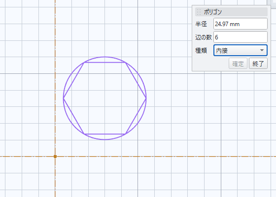
| ツール | 入力欄 |
|---|---|
| 線 | ［長さ］・［角度］（X 軸から反時計回り） |
| 円 | ［直径］ |
| 円弧（中心点） | ［半径］・［角度］ |
| 長方形 | ［幅］・［高さ］（角丸長方形は［半径］も） |
| スロット | 直線のスロットは［長さ］と［幅］、円弧のスロットは［幅］ |
| ポリゴン | ［半径］・［辺の数］・［種類］ |
ツールを選び、最初の点をクリックします。HUD が出ます。
ビューで数字・小数点・マイナス・左括弧のどれかを打つと、最初の欄に入ります。続けて残りを打ちます。
Tab で次の欄に移ります（Shift+Tab で前の欄）。数値の欄には値を打ち、選択肢は ↑・↓、チェックは Space で決めます。
Enter を押します。打った値（打っていない欄はカーソルの位置の値）で形が決まり、打った値が寸法になります。
打った欄はカーソルを動かしても変わりません。Esc で、描いている形をやめます。クリックで形を決めたときも、打った値は寸法として足されます。
欄には式も打てます。数値のほかに、単位（25 mm）、計算（40 + 2 * 5）、パラメータの名前（W * 2）が使えます。最初の文字が英字のときは、先に欄をクリックしてから入力します。

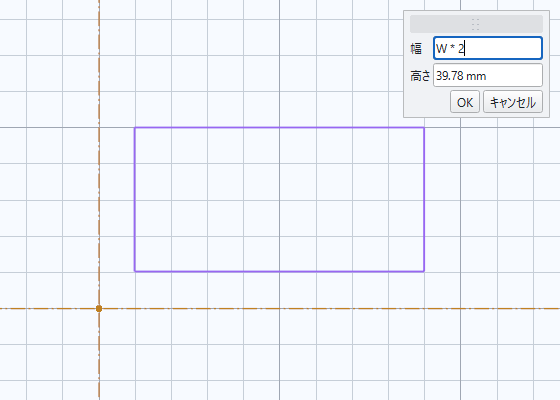
W を使った式 W * 2 を打っているところ。式を入れた寸法は、ビューの寸法に fx: が付きます（式とパラメータの寸法）。パラメータは第 10 章で作ります。
4.5 拘束
拘束は、図形どうしの関係（水平・平行・一致など）を決めて、形を保つ決まりです。拘束を付けておくと、寸法やドラッグで形を変えても、関係が保たれます。拘束のコマンドは、リボンの［スケッチ］タブ →［拘束］パネルにあります。

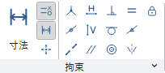
アイコンは縦に 3 つずつ、位置の拘束（一致・点を要素上に・同一直線上）、向きの拘束（水平・垂直・平行・直交）、円と形の拘束（正接・同心・等しい・中点・対称）、固定の順に並びます。水平・垂直のアイコンには H・V の文字があります。
拘束の種類
| 拘束 | 記号 | 意味 |
|---|---|---|
| ［一致］ | C | 2 点を一致させます（スケッチの原点にも付けられます） |
| ［点を要素上に］ | On | 点を線・円・円弧・スケッチの軸の上に置きます |
| ［同一直線上］ | ≡ | 2 本の線を同一直線上に置きます |
| ［水平］ | H | 線か 2 点を水平にします |
| ［垂直］ | V | 線か 2 点を垂直にします |
| ［平行］ | // | 2 本の線を平行にします |
| ［直交］ | ⊥ | 2 本の線を直交させます |
| ［正接］ | T | 線と円・円弧、または 2 つの円・円弧を接させます |
| ［同心円］ | ◎ | 2 つの円・円弧の中心を一致させます |
| ［等しい］ | = | 2 本の線の長さ、または 2 つの円・円弧の半径を等しくします |
| ［中点］ | M | 点を線か円弧の中点に置きます |
| ［対称］ | ][ | 2 つの点・線・円・円弧を、ある線に対して対称にします（線は最後に選びます） |
| ［固定］ | F | 点か要素を今の位置に固定します |
寸法も拘束の仲間です（寸法）。
拘束を付ける
拘束は、次のどの順でも付けられます。
先に要素を選んで、拘束のボタンを押します。要素を 1 本ずつクリックして選び（Ctrl を押しながらで追加）、拘束のボタンをクリックします。
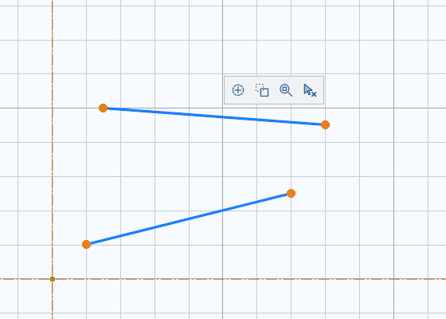
図 4-26 傾きの違う 2 本の線を選んだところ（太い青の線）。 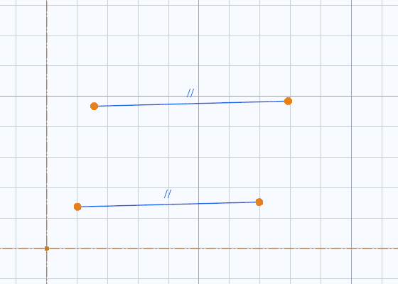
図 4-27 拘束の［平行］を押したあと。2 本の線が平行になり、 //の記号が付きます。先に拘束のボタンを押して、要素を 1 つずつクリックします。拘束に必要な数がそろった時点で付き、そのまま次の組を選べます。Esc で終えます。
要素を選んで右クリックします。メニューには、その選択に付けられる拘束だけが出ます。


3 つ以上の要素を選んだときは、まとめて付けられる拘束があります。水平・垂直・固定は 1 つずつに、一致・点を要素上に・平行・正接・同心円・等しいは、最初に選んだ要素との組で付きます。まとめて付けても、元に戻すは 1 回です。
右クリックのメニューに出る拘束のコマンドは、［拘束］パネルの同じ名前のコマンドと同じです（一覧は付録 Aの右クリックのメニューの節）。
付けた拘束を調べるには、要素を選んで［関連する拘束を選択］（［拘束］パネルの ▼）を押します。逆に、拘束の記号や寸法を選んで［関連する要素を選択］を押すと、その拘束が使う要素が選ばれます。
自動で付く拘束・スナップ・推論線・グリッド
作図中は、次の助けが自動で働きます。拘束の推論は、Ctrl を押しながらクリックすると、そのクリックでは付きません。
| 助け | 内容 |
|---|---|
| 拘束の推論 | 水平・垂直（2° 以内）、平行・直交（5° 以内、直前にカーソルを重ねた線との関係）、円弧の端点からの正接を、カーソルの右下の記号（H・V・//・⊥・T）で示し、クリックで拘束にします |
| スナップ | 端点・点・原点・中心・中点・交点・四分点・接点・垂線の足・線の上・軸の上に吸い付き、一致・点を要素上に・中点などの拘束を付けます。カーソルの右下に End・Mid・Ctr などが出ます |
| 点の位置合わせ | 既存の点にカーソルを重ねてから動かすと、その点と X か Y が揃う位置に点線の推論線が出て、揃えた位置に吸い付きます。拘束は付きません |
| グリッドにスナップ | ほかに吸い付くものがないとき、グリッドの交点に吸い付きます（既定では切） |

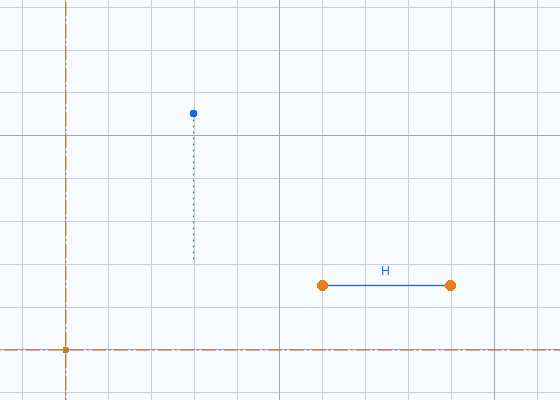
推論した拘束が競合したり余ったりするときは、その拘束だけを外して図形を確定し、案内の欄で知らせます。
これらの入り切りと、吸い付く距離は、リボンの［ツール］タブ → ［オプション］パネル → ［オプション］の［スケッチ］ページで決めます。
拘束の表示と拘束マネージャ
拘束の記号や寸法が込み入って見にくいときは、表示を切り替えます。スケッチの図形は消えません。
| コマンド | 表示するもの |
|---|---|
| ［拘束を表示］ | 幾何拘束の記号 |
| ［寸法を表示］ | 寸法 |
| ［すべての自由度を表示］ | まだ動ける点の矢印（自由度） |
| ［構築線を表示］ | 構築線と中心線 |
| ［投影ジオメトリを表示］ | 投影したジオメトリ |
これらはリボンの［スケッチ］タブの［拘束］パネルと［形式］パネルにあり、［オプション］の［スケッチ］ページでも決められます。3D ビューでスケッチと寸法を出し入れするときは、［表示］タブの［オブジェクトの表示設定］で［スケッチ］・［スケッチ寸法］を切り替えます（第 2 章）。
右のドックの［拘束マネージャ］は、スケッチの間だけ出ます。スケッチの拘束と寸法を一覧にして、行をクリックすると、その拘束と要素がビューで強調されます。

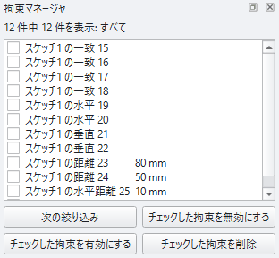
［次の絞り込み］: 一覧をすべて・幾何拘束・寸法・競合と冗長・無効の順に絞り込みます。
［チェックした拘束を無効にする］・［チェックした拘束を有効にする］: チェックを付けた拘束を、削除せずに効かなくしたり、効くように戻したりします。
［チェックした拘束を削除］: チェックを付けた拘束を消します。
自由度と状態の診断
右のドックの［スケッチの診断］に、スケッチの状態が出ます。

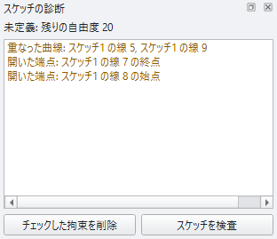
未定義: 残りの自由度 3のように、残りの自由度の数。［完全定義］: 形が全部決まっています。
［過剰定義］・競合: 消すとよい拘束の候補。チェックを付けて［チェックした拘束を削除］を押します。
検証の指摘: ［開いた端点］・［重なった曲線］・［交差する曲線］・［退化した形状］。行をクリックすると、その場所が強調されます。［スケッチを検査］で検証し直します。
［すべての自由度を表示］を入れると、まだ動かせる点に橙の矢印が出ます。矢印が全部なくなると、完全定義です。

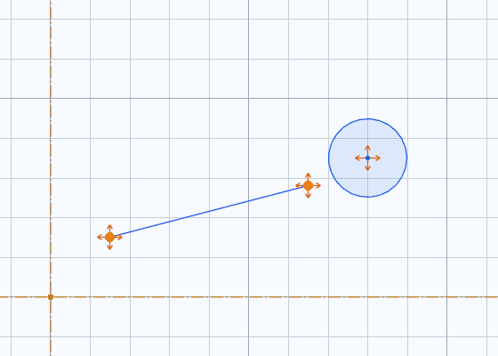
競合と冗長
すでにある拘束と矛盾する拘束や寸法を付けようとすると、［拘束の競合］のダイアログが出て、形は変わりません。

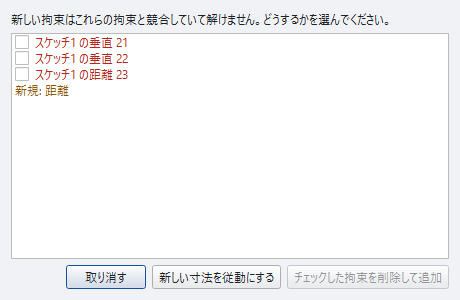
［取り消す］: 新しい拘束を付けません。
［新しい寸法を従動にする］: 新しい寸法を、形を決めない参照寸法として足します（寸法のときだけ）。
［チェックした拘束を削除して追加］: チェックを付けた既存の拘束を消して、新しい拘束を足します。
余分な（冗長な）拘束のときは、新しい拘束との組の中で一番新しいものが削除の候補（［候補］）になります。ダイアログを開いたまま、元に戻すなどでスケッチが変わると、ダイアログは取り消されて閉じます。
4.6 寸法
寸法は、長さ・角度・半径などの値で形を決める拘束です。値を変えると、拘束を保ったまま形が変わります。
リボンの［スケッチ］タブ → ［拘束］パネル → ［寸法］をクリックします（D）。
寸法を付ける線・円・点などをクリックします（2 つ選ぶときは順にクリック）。
寸法を置く位置をクリックします。ビューに HUD が出ます。
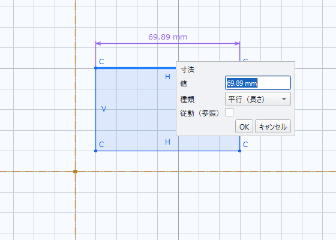
図 4-33 寸法の HUD。［値］・［種類］・［従動（参照）］があります。置いた位置に出て動かないので、［OK］・［キャンセル］のボタンをマウスで押すこともできます。 ［値］に数値（式も可）を入力して Enter を押します。続けて次の寸法を付けられます。Esc でツールを終えます。

［種類］は、選んだ要素と置く位置で自動で決まります。置く位置を動かすと、水平・垂直・平行に変わります。HUD の［種類］で選び直すこともできます。
寸法の種類
| 選ぶもの | 付く寸法 |
|---|---|
| 線 1 本、または 2 点 | ［平行（長さ）］・［水平］・［垂直］ |
| 点と線 | ［距離］（点から線までの距離。HUD で［2 倍距離］にも。中心線を選ぶと［2 倍距離］が既定で、回転する形の直径を決められます） |
| 2 本の線 | ［角度］（置いた位置の側の角度。平行な線は距離） |
| 3 点 | 3 点の角度 |
| 円 | ［直径］（HUD で［半径］にも） |
| 円弧 | ［半径］（［直径］・［円弧の中心角］・［円弧長］にも） |
| 円と円、円と線 | ［中心間］・［最小］・［最大］の距離 |
| 原点と点 | 水平・垂直の距離（座標） |

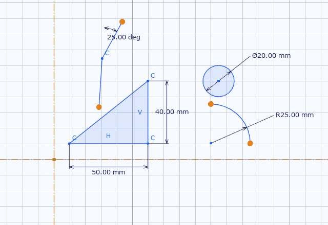
Ø）、円弧の半径（R）、2 本の線の角度です。寸法の値を直すには、ビューの寸法の数字をダブルクリックします。HUD が出るので、新しい値（式も可）を入力して Enter を押します。寸法の文字をドラッグすると、表示の位置だけが動きます。
式とパラメータの寸法
寸法の値に、式やパラメータの名前を入れられます。式で決まる寸法には、ビューの文字に fx: が付きます。

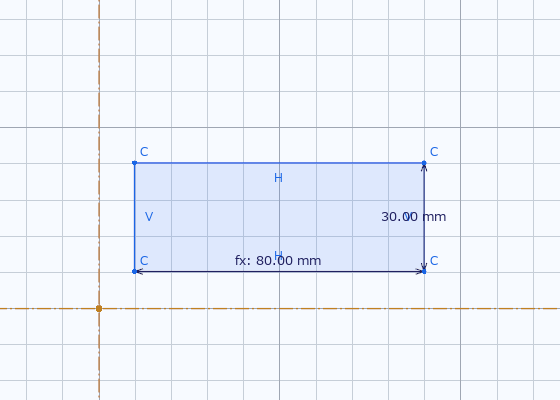
W * 2、高さに 30 を入れた長方形。式の寸法には fx: が付きます。寸法の表示は、リボンの［スケッチ］タブ →［形式］パネルの ▼ で切り替えます。

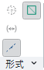
| コマンド | 表示 |
|---|---|
| ［寸法を値で表示］ | 値（80.00 mm）。既定です |
| ［寸法を名前で表示］ | 名前（d0 など。寸法に自動で付く名前で、パラメータの表で付け替えられます） |
| ［寸法を式で表示］ | 名前と式（d0 = W * 2） |

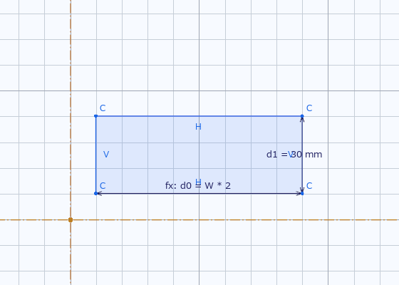
d0・d1 は、寸法に自動で付いた名前です（番号は、先に付けた寸法の数で変わります）。駆動寸法と従動寸法
寸法には 2 つの使い方があります。
駆動寸法: 値で形を決めます。既定です。
従動寸法（参照寸法）: 形を決めず、今の値を測って括弧付きで表示します。ほかの寸法で決まった長さを確かめたいときに使います。
寸法を付けるとき、HUD の［従動（参照）］にチェックを入れます。
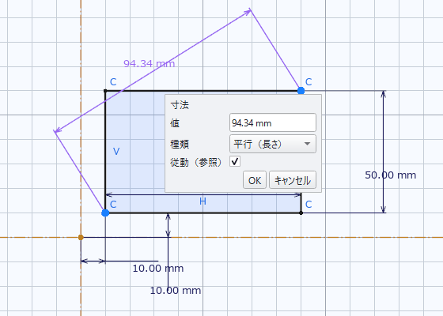
図 4-38 完全定義の長方形の対角に、従動の寸法を足すところ。［種類］は［平行（長さ）］です。 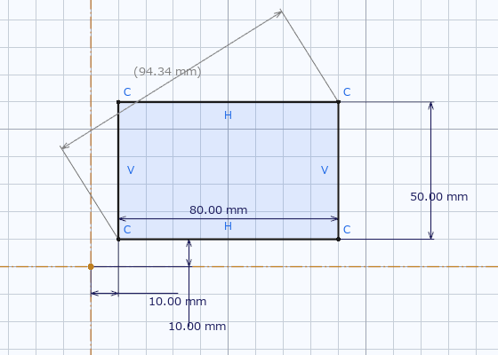
図 4-39 完全定義の長方形の対角に、従動の寸法を足したところ。従動の寸法は括弧で表示されます。 付けた寸法を切り替えるには、寸法の文字をクリックして選び、リボンの［スケッチ］タブ →［形式］パネル →［従動寸法の切替］を押します。


従動にした寸法を駆動に戻すと、そのときの値が駆動寸法の値になります（形は変わりません）。寸法を足すと拘束が多すぎる（競合する）ときは、ダイアログの［新しい寸法を従動にする］で足せます。
4.7 編集
描いた図形を選んで、動かす・増やす・切るなどの編集をします。編集のコマンドは、リボンの［スケッチ］タブ →［修正］パネルと［パターン］パネルにあります。どの編集も、元に戻すは 1 回です。

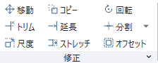

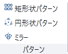
要素を選ぶ・消す
| 操作 | 結果 |
|---|---|
| クリック | 点・曲線・拘束の記号・寸法を 1 つ選びます。Ctrl で切り替え、Shift で追加します |
| 空白から左から右へドラッグ | 枠に全体が入る要素を選びます（窓選択。実線の枠） |
| 空白から右から左へドラッグ | 枠に掛かる要素を選びます（交差選択。破線の枠） |
| 曲線をダブルクリック | 端点でつながった曲線をまとめて選びます（［チェーンを選択］と同じ） |
| 同じ場所をもう一度クリック | 重なった候補（点 → 曲線 → 軸）を順に選びます |
選んだ点や曲線は、ドラッグして動かせます。拘束を保ったまま形が追従します。原点と軸は動かせません。
寸法で決めた形は、ドラッグで軸や線の反対側へ裏返りません。たとえば、左の線を縦の軸に付けて幅の寸法を入れた長方形は、右の線を軸の左へ引いても、軸の右に留まります。寸法は長さだけを決めるので、反対側の鏡の形も寸法を満たしますが、ドラッグは今の形から続けて動ける範囲だけを動きます。カーソルが反対側にある間は、今の側のまま動ける向き（この長方形なら上下）にだけ付いていきます。このとき、案内の欄に、反対側へは動かせないことが出ます。反対側へ移すには、幅の寸法を従動にしてから引き、駆動に戻して値を直します（駆動寸法と従動寸法）。
Delete（［スケッチ要素を削除］）で、選んだ要素と、それを使う拘束・寸法を消します。消えた数が案内の欄に出ます（元に戻すで戻ります）。
［スケッチの全要素を削除］は要素と拘束をすべて、［スケッチの全拘束を削除］は拘束だけをすべて消します。
後のフィーチャが使っているプロファイルや要素が消えると、知らせが出ます。
トリム・延長・分割
［トリム］: 曲線にカーソルを合わせると、消える部分（交点の間）が赤い破線で出ます。クリックで消します。曲線を横切ってドラッグすると、横切った曲線をまとめて消します。
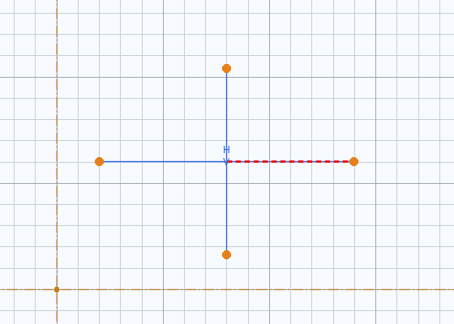
図 4-42 トリム。右側の部分が赤い破線で示されています。 ［延長］: 延ばしたい曲線の端に近い部分をクリックすると、一番近くで交わる曲線まで延びます。横切るドラッグで複数を延ばせます。
［分割］: 曲線をクリックすると、一番近い交点で分けます（円は 2 つの円弧になります）。
［等分割］: HUD の［分割数］を入力して、線か円弧をクリックします。等しい長さに分けます。

トリムで切った端には、切った相手の曲線への拘束（点を要素上に）が付きます。
移動・コピー・回転・尺度・ストレッチ
動かす要素を、先に選んでおくか、ツールを始めてからクリックして選びます（もう一度クリックで外れます）。先に選んでおくと、次の段へすぐ進みます。ツールを始めてから選んだときは、Enter かダブルクリックで進みます。
ツールの案内に従って、基準点などをクリックします。
| ツール | 操作 |
|---|---|
| ［移動］ | 基準点 → 移動先。HUD の［コピー］にチェックを入れると、写しを作ります |
| ［コピー］ | 基準点 → 置く位置 |
| ［回転］ | 中心 → 角度の位置（または HUD の［角度］） |
| ［尺度］ | 基準点 → 倍率の位置（または HUD の［尺度係数］） |
| ［ストレッチ］ | 基準点 → 移動先。選んだ要素とつながった線の端が一緒に伸び縮みします |

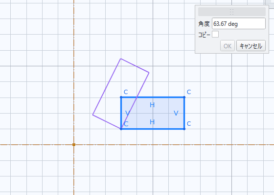
移動・回転・尺度・ストレッチでは、形が変わって成り立たなくなる幾何拘束は消え、値が変わる寸法は今の長さ・角度になります。拘束を保ってほしいときは、ドラッグで形を変えるか、寸法の値を直します。
この拘束の扱いに確認のダイアログは出しません（パラメータの寸法を除く。下記）。
オフセット
リボンの［スケッチ］タブ → ［修正］パネル → ［オフセット］をクリックします。
曲線をクリックします。端点でつながった曲線の鎖（ループ）がまとめて選ばれます。先に選んでおいた曲線があれば、その鎖です。
オフセットする側にカーソルを動かし、クリックするか、［距離］を入力して Enter を押します。
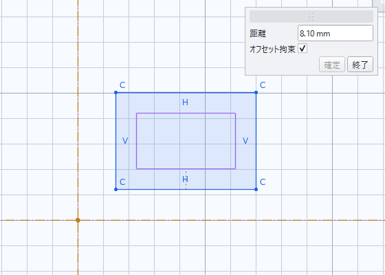
図 4-44 オフセット。プレビューが紫の線で出ています。

オフセットでできた形は、普通のスケッチの線・円弧・円です。距離を隠れた値で固定することはありません。端点でつながる曲線どうしは、端点の［一致］でつながります。
HUD の［オフセット拘束］（既定ではオン）で、元との関係を選びます。選んだ値は、次にオフセットするときにも使われます。
オン: 元とオフセットが等しい間隔を保つ関係（拘束の［オフセット］。記号は
‖）だけが付きます。間隔そのものは決まっていません。オフセットの線や円の縁をドラッグすると、間隔が全体で一様に変わります。
あとから、間隔の寸法（点と線の距離）や、外側の円の直径の寸法を付けられます。値を変えると、そのとき間隔が変わります。
元の寸法を変えると、そのときの間隔のまま付いてきます。
元の形の拘束が少ない（寸法の無い矩形など）ときにオフセットの形へ寸法を足すと、動くのは間隔ではなく拘束の少ない元の形です（Inventor と同じ考え方）。間隔を変えたいときは、元の形を寸法で決めておくか、間隔の寸法を付けます。
オフ: 端点の一致だけの、普通の形の写しです。元には付いてこず、自由に動かせます。
HUD の［距離］に数値（式やパラメータの名前でもかまいません）を入力して Enter を押したときだけ、その値の駆動寸法（［オフセット距離］）も付きます。ダブルクリックして値を変えられ、パラメータの表にも出ます。クリックで置いたときは、寸法は付きません。

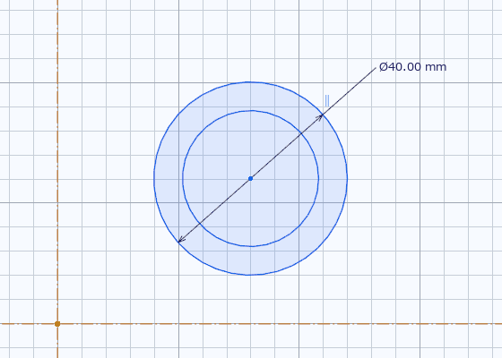
‖ がオフセットの拘束です。元の曲線やオフセットの曲線を、トリム・分割・延長・フィレット・面取りで形を変えると、オフセットの拘束は外れて、残りは普通の形になります。元かオフセットのどちらかを消したときも同じです。
ミラー
ミラーする要素を選びます。
リボンの［スケッチ］タブ → ［パターン］パネル → ［ミラー］をクリックし、ミラー線（線・中心線・スケッチの軸）をクリックします。

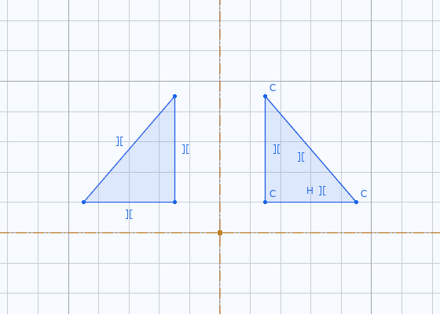
][ が付き、元を変えるとミラーも付いてきます。パターン
繰り返す要素を選びます。
リボンの［スケッチ］タブ → ［パターン］パネル → ［矩形状パターン］かリボンの［スケッチ］タブ → ［パターン］パネル → ［円形状パターン］をクリックします。
矩形状パターンは、方向 1 の線をクリックします（省くと X 軸。方向 2 は Y 軸）。円形状パターンは、中心の点をクリックします（スケッチの点・端点・円の中心・原点）。
HUD の欄を入力します。プレビューが更新されます。Enter で確定します。

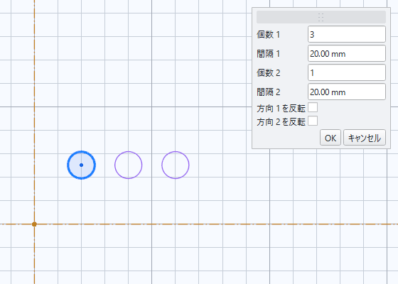

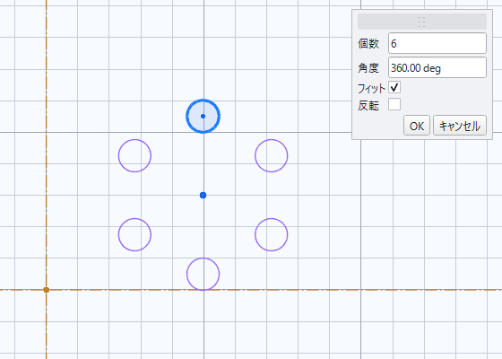
パターンでできた要素は、元の要素に付いてきます。元の寸法を変えるとパターンも変わります。パターンの要素は、ドラッグ・トリム・分割では変えられず、消すとパターンごと消えます。個数や間隔を変えるには、パターンの要素（または以前の版でできたオフセットの要素）を選んで［パターンまたはオフセットを編集］（右クリックのメニューにもあります）を押し、HUD で値を変えて Enter を押します。個数を変えると、要素が増減します。
パラメータの寸法を緩めるときの確認
パラメータの式で決まっている寸法（fx: の付いた寸法）の値が、編集で変わってしまうことがあります。そのときは、確認のダイアログが出ます。

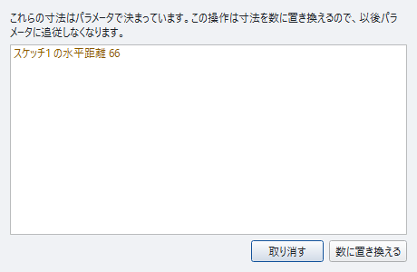
W で決まっている、原点からの水平距離を持つ長方形を移動したとき。寸法がパラメータに追従しなくなることを確認します。［取り消す］: 編集をやめます。
［数に置き換える］: 該当の寸法を今の数値に置き換えて編集します。以後その寸法はパラメータに追従しません。
コピーでは確認しません（元の寸法は変わらないため）。
投影した辺は動かせない
モデルから投影した線（青緑）は固定です。移動・回転・尺度・ストレッチ・分割・等分割・トリム・延長・フィレット・面取りは使えません。コピー・ミラー・オフセットは使えます。
4.8 ジオメトリの投影
投影は、パーツの面・エッジ・頂点を、スケッチの平面に写して、スケッチの線として使う機能です。投影した線は元に付いてきます。上流の寸法を変えると、投影も更新されます。
面に置いたスケッチ
平らな面にスケッチを始めると、面の外周のエッジが自動で投影されます。

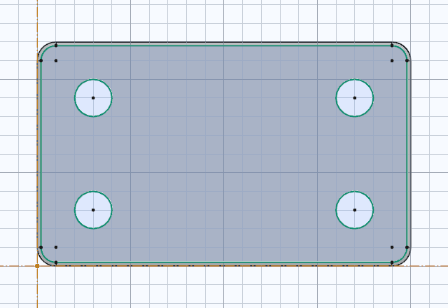
フィレットで丸めた角の円弧や、穴の円も、そのまま投影されます。投影した線は、スケッチの形を決める基準になります。線の端点につなげて、図形を描けます。
投影のツール
リボンの［スケッチ］タブ → ［作成］パネル → ［投影］の▼ → ［ジオメトリを投影］をクリックします（P）。
3D ビューで、面・エッジ・頂点をクリックします。面をクリックすると、面の外周（フィレットの円弧を含む）と穴のエッジが全部入ります（すでに入っているエッジは入れ直しません）。続けて何度でも選べます。
図 4-51 板の上面の右のエッジを 1 本クリックして投影したところ。 Esc でツールを終えます。

［切断エッジを投影］は、スケッチの平面がボディを切る所の断面の線（ボディと平面の交線）を、選択なしですぐ投影します。作業平面にスケッチを置いて、その高さの断面を使うときに便利です。

投影した線を隠すには、［投影ジオメトリを表示］を切ります。線は消えず、見えなくなるだけです。
断面の線を選んで投影する（スライス表示）
スケッチの平面がボディの中を通るとき（作業平面に置いたスケッチなど）、リボンの［スケッチ］タブ → ［形式］パネル → ［スライス表示］（F7）を入れると、スケッチの平面より手前（スケッチの法線の側）のモデルが取り去られ、平面でのボディの断面が、塗りつぶしとハッチングで見えます。ボディは半透明でなく、ふつうの色で表示されます。スケッチの背景の右クリックのメニューにもあります。
［形式］パネルの［スライス表示］をクリックします（もう一度クリックすると切れます）。
リボンの［スケッチ］タブ → ［作成］パネル → ［投影］の▼ → ［ジオメトリを投影］をクリックし、断面の線（断面の塗りつぶしの縁）にカーソルを合わせます。線が橙の太線で強調されます。
クリックすると、その線 1 本だけが投影されます。［切断エッジを投影］と同じ、ボディと平面の交線で、上流の寸法を変えると付いてきます。投影した線は投影の色（青緑）で断面の上に表示されます。スライス表示の断面は塗りとハッチングだけで縁の線を描かないので、断面の縁に見える線は投影した線です。［投影ジオメトリを表示］が切れているときに投影すると、投影した線が見えるように自動で入ります（ステータスバーに知らせます）。すでに入っている線は強調されず、入れ直しません。
Esc でツールを終えます。
断面の線から離れた所をクリックすると、今までどおり面・エッジ・頂点が投影されます（残った側のエッジなど）。［切断エッジを投影］が断面の線を全部入れるのに対し、こちらは必要な線だけを選べます。コイルのような曲面のボディの断面（自由曲線になる線）も選べます。
投影元がなくなったとき
投影元の面やエッジがなくなると（元のフィーチャの抑制・削除など）、投影した線は茶色の破線になります。茶色の線は、最後に有効だった位置のまま残り、付いていた拘束は外して、ほかの要素で解きます。

投影元が戻れば（抑制を解くなど）、自動で直ります。別の元に付け直すこともできます。
茶色の線をクリックして選びます。
右クリックの［投影ジオメトリの参照を付け直す］（または［作成］パネルの ▼ の［投影ジオメトリの参照を付け直す］）をクリックします。
新しい元になるエッジか面を、3D ビューでクリックします。
線はそのままで、付いていた拘束も変わりません。付け替えは 1 回の変更として履歴に入ります。
4.9 スケッチ平面の再定義
描いたスケッチの置き場所（平面や面）を、別の平面や面に付け替えます。スケッチの要素と拘束はそのままで、後ろのフィーチャが再計算されます。
ブラウザでスケッチをクリックして選びます。
リボンの［3D モデル］タブ →［スケッチ］パネルの ▼ →［スケッチ平面を再定義］をクリックします（スケッチの右クリックでも選べます）。
プロパティ パネルの［平面］に、新しい平面を選びます（ブラウザの作業平面や、ビューの面をクリック）。
図 4-54 リブのスケッチの平面を、 上の平面に付け替えるところ。［OK］で確定します。

投影した線は、新しい平面に投影し直されます。元に戻すで、元の平面と形に戻ります。
4.10 コピーと貼り付け
スケッチの要素を、別のスケッチ・別のドキュメントにコピーできます。
コピーする要素を選びます（窓選択が便利です）。
図 4-55 長方形と円を窓選択したところ。 リボンの［スケッチ］タブ → ［修正］パネル → ［コピー］（Ctrl+C）で写し、切り取りなら［切り取り］（Ctrl+X）を使います。
貼り付け先のスケッチ（別のスケッチ、別のドキュメントでも可）を開き、リボンの［スケッチ］タブ → ［修正］パネル → ［貼り付け］（Ctrl+V）を押します。
図 4-56 XY 平面のスケッチで窓選択してコピーした長方形と円を、XZ 平面の新しいスケッチに貼り付けたところ。選んだ要素の間の拘束も一緒に貼られます。


貼り付けた図形は、少しずらした位置に置かれます。貼り付けは 1 回の変更です。
同じドキュメントの中なら、投影した線は投影のまま貼られます。別のドキュメントに貼ると、固定の線になります。
貼り付けた要素は、元の要素との関係（フィーチャからの追従）を失い、新しい要素になります。
他のアプリでコピーした文字を貼ろうとしても、何も起きず、知らせが出ます。
4.11 スケッチの修復
手で描いた線の端点がわずかにずれていると、領域が閉じません。［スケッチを修復］は、次の問題を直します。
長さ 0 の線や半径 0 の円などの縮退した要素を消します。
同じ位置の重なった線を 1 本だけ残します（重複）。
近くにあるのにつながっていない端点を、一致の拘束でつなぎます。近さの許容は、スケッチの大きさの 1000 分の 1（0.0001〜1 mm）です。
リボンの［スケッチ］タブ →［修正］パネルの ▼ →［スケッチを修復］をクリックします。


許容より離れた端点はつなぎません。［スケッチの診断］の［スケッチを検査］で、直ったかどうかを確かめられます。
4.12 構築線と中心線
構築線は、形を作る手助けになる線です。実線にならず、閉じた領域にも使われません。
| 線 | 作り方 | 用途 |
|---|---|---|
| 構築線（破線） | ［線（構築線）］で描く、または選んだ要素に［構築線］（［スケッチ］タブ →［形式］パネル）を押す | 位置決めの基準。もう一度押すと実線に戻ります |
| 中心線（一点鎖線） | ［中心線］で描く | 回転の軸、ミラーの線、対称の基準 |

［構築線を表示］を切ると、構築線と中心線を隠せます（消しません）。
4.13 閉じた領域（プロファイル）
曲線が閉じた輪郭をつくると、淡い青の網掛けの領域になります。領域は押し出し・回転などの［プロファイル］として使えます。

輪郭が交わる所で、領域が分かれます。内側の閉じた輪郭は、外側の領域の穴になります。
開いた線は領域になりません。端の橙の点で見つけられます。
同じ線を重ねて描くと、［重なった曲線］の警告が出ます。領域は 1 つにまとまります。
文字の輪郭、投影した面の外周も領域になります。構築線と中心線は領域に使われません。
押し出しを始めると、領域が 1 つだけのスケッチは［プロファイル］に自動で入ります。領域が複数あるときは、使う領域をビューでクリックします。［全部の領域］で全部を選び、［外す］で外します。


1 つのスケッチの領域を、複数のフィーチャで使えます。使われたスケッチは、ブラウザで既定は非表示です。押し出しの詳しい使い方は第 6 章にあります。
領域の面積・図心・断面二次モーメントは、リボンの［検査］タブ → ［計測］パネル → ［領域のプロパティ］で調べます。

このダイアログは開いたまま、ビューやブラウザを操作できます。スケッチの形を変えても、開いている領域の一覧は自動では変わりません。変えたときは、開き直します。
4.14 スケッチの設定
リボンの［ツール］タブ → ［オプション］パネル → ［オプション］の［スケッチ］ページで、スケッチの動きを決めます。
| 設定 | 内容 |
|---|---|
| ［スケッチの拘束を推論して付ける］ | 作図中の水平・垂直・平行・直交・正接の推論の入り切り |
| ［点の位置合わせ］ | 点線の推論線の入り切り |
| ［グリッドにスナップ］ | グリッドの交点への吸い付き（既定は切） |
| ［スケッチのスナップの半径（ピクセル）］ | 点や曲線に吸い付く距離（既定 8） |
| ［面にスケッチを作成するとき、その面のエッジを投影する］ | 面に置いたスケッチの自動の投影（既定は入） |
| ［拘束の記号を表示］・［寸法を表示］・［構築線を表示］・［投影ジオメトリを表示］・［すべての自由度を表示］ | 表示の既定。リボンの切替と同じ設定です |
| ［寸法の表示方法］ | 値・名前・式 |
ほかに、ドラッグで形を解く方法の細かい設定（［その場で解くスケッチの成分の最大］など）があります。通常は変えません。